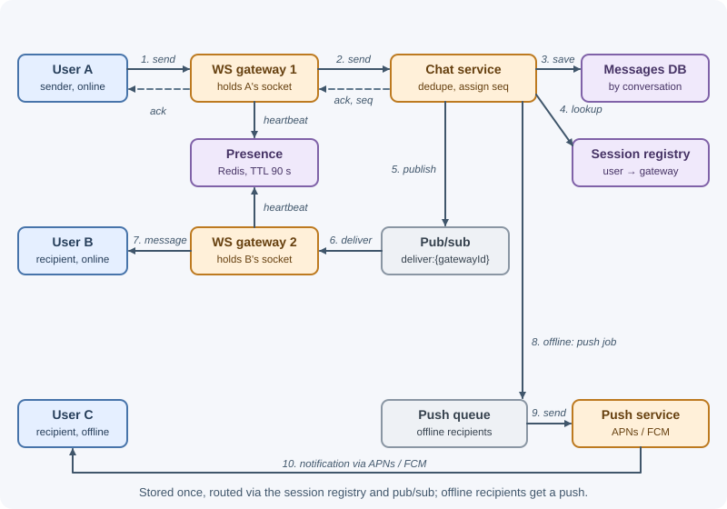
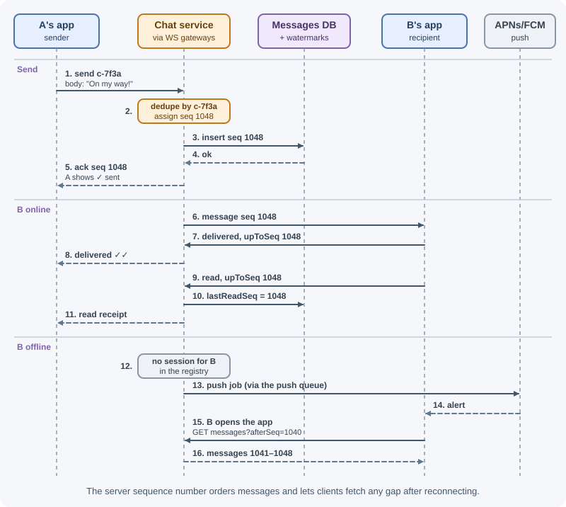

Case Study: Chat Application¶
A chat application delivers messages between people in near real time, in one-to-one and group conversations, across phones and browsers that go online and offline constantly. The design challenges are holding millions of long-lived connections, routing each message to whichever server holds the recipient's connection, keeping messages ordered and never lost, and handling receipts, presence, offline users, and media.
Requirements¶
Functional¶
- One-to-one (direct) chats and group chats (up to 500 members).
- Send and receive text messages in real time.
- Send images and files.
- Message history, available on every device of a user.
- Delivery and read receipts (sent → delivered → read).
- Online presence and "last seen."
- Offline users receive messages when they reconnect, plus a push notification.
- Conversation list with the latest message and unread count.
Non-functional¶
- Scale: 50 million daily active users; 10 million concurrent connections at peak.
- Latency: message delivered to an online recipient in the same region in under ~300 ms at p99.
- Ordering: messages appear in the same order for every member of a conversation.
- Durability: once the sender sees "sent," the message is never lost.
- No duplicates: retries must not create duplicate messages.
- Availability: 99.99%; a connection server failure only forces its clients to reconnect.
- Security: TLS for all traffic; access only for conversation members.
Capacity estimates¶
Assumptions: 50 M DAU; 40 messages sent per user per day; average 2 recipients per message (mostly direct chats); 200 bytes per stored message (text + metadata); 5% of messages carry media averaging 300 KB; peak = 3×; 20% of DAU connected at peak; one connection server holds 100,000 connections comfortably.
Messages sent: 50 M × 40 = 2 × 10^9 /day
2 × 10^9 ÷ 10^5 ≈ 20,000 /s peak ≈ 60,000 /s
Deliveries: × 2 recipients ≈ 40,000 /s peak ≈ 120,000 /s
Message storage: 2 × 10^9 × 200 B = 400 GB/day ≈ 146 TB/year
× 3 replicas ≈ 440 TB/year
Media: 5% × 2 × 10^9 × 300 KB = 30 TB/day → object storage + CDN
Connections: 20% × 50 M = 10 M concurrent
Connection servers: 10 M ÷ 100,000 = 100 (+ headroom → ~150)
Presence: refresh every 60 s per connection → 10 M ÷ 60 ≈ 170,000 writes/s
(in-memory store with TTLs, sharded)
Conclusions: message storage needs a horizontally scalable store partitioned by conversation; connections need a dedicated, stateful tier; media goes to object storage; presence needs an in-memory store and careful fan-out.
API design¶
Real-time traffic uses a WebSocket connection; history, conversation management, and uploads use REST. See real-time communication.
Connect
GET wss://chat.example.com/ws?ticket=<one-time ticket from an authenticated REST call>
→ 101 Switching Protocols
WebSocket messages (JSON frames)
client → server { "type": "send", "clientMsgId": "c-7f3a", "conversationId": "cv_91",
"body": "On my way!" }
server → client { "type": "ack", "clientMsgId": "c-7f3a", "messageId": "1290481234567892992",
"seq": 1048, "createdAt": "2026-11-07T14:32:10.512Z" }
server → client { "type": "message", "conversationId": "cv_91", "messageId": "1290481234567892992",
"seq": 1048, "senderId": "u_42", "body": "On my way!", "createdAt": "..." }
client → server { "type": "receipt", "conversationId": "cv_91", "kind": "read", "upToSeq": 1048 }
server → client { "type": "receipt", "conversationId": "cv_91", "userId": "u_77",
"kind": "read", "upToSeq": 1048 }
server → client { "type": "presence", "userId": "u_77", "status": "online" }
REST
GET /v1/conversations?cursor=...&limit=20 conversation list with unread counts
POST /v1/conversations { "type": "group", "memberIds": [...], "name": "..." }
GET /v1/conversations/{id}/messages?beforeSeq=1048&limit=50 older history
GET /v1/conversations/{id}/messages?afterSeq=990 catch up after reconnect
POST /v1/media/uploads { "contentType": "image/jpeg", "size": 284113 }
→ { "uploadUrl": "...", "mediaKey": "..." }
Data model¶
conversations — id (PK), type (direct | group), name,
createdAt, lastSeq, lastMessageAt. For direct chats, a unique
pairKey = sorted userA:userB ensures one conversation per pair.
conversation_members — PK (conversationId, userId); role,
joinedAt, lastDeliveredSeq, lastReadSeq. A secondary access path
(userId, lastMessageAt DESC) powers the conversation list.
messages — the large table, in a wide-column store (Cassandra,
ScyllaDB, DynamoDB) designed for "messages of a conversation in order":
| Field | Notes |
|---|---|
conversationId + bucket |
Partition key; bucket (for example, the month) keeps partitions bounded for long-lived chats |
seq |
Clustering key, descending: per-conversation order |
messageId |
Globally unique, time-ordered (Snowflake-style) |
senderId, clientMsgId |
(conversationId, senderId, clientMsgId) deduplicates retries |
type, body, mediaKey, mediaMeta |
Text or media reference |
createdAt |
Server time |
The message is stored once per conversation, not once per member.
devices — (userId, deviceId) → platform, push token, last active.
In Redis (ephemeral):
sessions:{userId} → hash deviceId → connectionServerId (who is connected where)
presence:{userId} → "online", TTL 90 s (refreshed by heartbeats)
lastseen:{userId} → timestamp (also persisted periodically)
recent:{convId} → list of the last 100 messages (hot history cache)
High-level design¶

Connection servers are the WebSocket gateways in the diagram. History, group management, and upload requests use REST through a stateless API service that reads the same messages DB; media goes to object storage and is served through the CDN (deep dive 6).
Send path (user A → conversation with user B):
- A's device sends
sendwith aclientMsgIdover its WebSocket. - The connection server forwards it to the chat service.
- The chat service checks membership, deduplicates by
clientMsgId, assigns the nextseqfor the conversation, generatesmessageId, and persists the message. - It replies to A with
ack(A's UI shows "sent"). - It looks up the members' sessions in the registry and publishes the message to each relevant connection server's channel.
- B's connection server pushes
messageto B's devices. B's device replies with a delivered receipt. - Members with no active session get a push notification via the queue.
Read path (opening a conversation / reconnecting):
- The client knows the last
seqit has for each conversation. - On reconnect it calls
GET .../messages?afterSeq=<last>for conversations with newerlastSeqvalues (from the conversation list), filling gaps. - Scrolling up calls
?beforeSeq=...&limit=50, served from the recent-list cache or the messages DB.
Deep dives¶
1. Connection servers and routing messages between them¶
Each connection server holds tens of thousands of open WebSockets. It is stateful (the socket lives in its memory), while everything else stays stateless.
- On connect, the server authenticates the ticket and registers
sessions:{userId}[deviceId] = serverIdin Redis; on disconnect, it removes the entry. - To deliver, the chat service reads the recipients' sessions and publishes
to each target server's channel (
deliver:{serverId}), batching all recipients on the same server into one publish. - Redis Pub/Sub is fire-and-forget: if a connection server misses a
publish (restarting), the message is still safe in the database, and the
client recovers it through
afterSeqsync on reconnect. The database is the source of truth; pub/sub is only a fast path. (A durable log such as Kafka is an alternative when you need replay on the delivery path.) - Heartbeats (ping/pong every ~30 s) detect dead connections behind NATs and mobile networks.
- Deploys and failures: draining a server closes its connections; clients reconnect with exponential backoff and jitter to avoid a thundering herd onto the remaining servers. The load balancer must support WebSocket upgrades and long idle timeouts. See WebSockets and load balancing.
2. Message IDs, ordering, storage, and history¶
Two identifiers serve different purposes:
messageId— globally unique and roughly time-ordered (Snowflake-style; see building blocks). Used for references (replies, reactions) across the system.seq— a per-conversation sequence number (1, 2, 3 …) that defines the authoritative order and lets clients detect gaps ("I have 1040, server says lastSeq is 1048 → fetch 1041–1048").
Client timestamps are never used for ordering — device clocks are wrong. Ordering is guaranteed per conversation only; there is no global order, and none is needed.
Assigning seq must be atomic per conversation:
- Atomic increment of
lastSeqon the conversation (database conditional update, or RedisINCR conv:{id}:seqpersisted with the message), or - Route all writes for a conversation to one owner (partition the chat
service work by
conversationId, for example with Kafka partitions), so a single writer assigns sequence numbers in order.
Idempotency: the client generates clientMsgId and reuses it on
retries; the chat service records (conversationId, senderId, clientMsgId)
and returns the original ack for duplicates. See
timeouts, retries, and idempotency.
Storage and pagination: the partition (conversationId, month) with
clustering by seq DESC makes "latest 50 messages" and "50 before seq X" a
single sequential read:
SELECT * FROM messages
WHERE conversation_id = ? AND bucket = ? AND seq < ?
ORDER BY seq DESC LIMIT 50; -- continue into the previous bucket if needed
Cursor pagination by seq stays fast and stable as new messages arrive. The
last 100 messages of active conversations are cached in a Redis list.
3. Delivery and read receipts, offline users, and push¶

Message states from the sender's view:
sending (on device) ─► sent (server persisted, ack received)
─► delivered (a recipient device received it)
─► read (a recipient opened the conversation)
Instead of a row per message per recipient, store watermarks per member:
lastDeliveredSeq and lastReadSeq. "Read up to 1048" marks everything at or
below 1048 as read with one update. Unread count = conversation.lastSeq −
member.lastReadSeq. For groups, "read by 12 of 40" is computed from members'
watermarks. Clients batch receipts (for example, send one read receipt
when the user stops scrolling), which cuts receipt traffic dramatically.
Offline recipients: if a member has no sessions, the chat service
enqueues a push job. The notification service sends via APNs (Apple) or FCM
(Google) with minimal content (or just "New message" for privacy), using
collapse identifiers (APNs apns-collapse-id, an Android notification
tag with FCM) so ten messages do not create ten alerts. See the
notification system case study.
When the app opens, it connects and syncs every conversation whose lastSeq
exceeds the device's own cursor. Each device keeps its own cursor, so a
phone and a laptop both catch up independently (multi-device sync).
4. Group chat fan-out¶
For a group of up to 500 members, the message is stored once and fanned out on delivery:
- Load the member list (cached; invalidated on membership changes).
- Look up sessions for all members in one batched Redis call.
- Group online recipients by connection server; publish one batch per server.
- Enqueue pushes for offline members (respecting their mute settings).
Costs grow with group size × message rate; an active 500-member group is the expensive case. Mitigations: cap group size, rate-limit senders, skip real-time delivery for members who have the conversation muted and backgrounded, and for very large broadcast channels (thousands of members), push only a lightweight "conversation updated" signal and let clients fetch messages when they open the channel.
5. Presence¶
- The connection server sets
presence:{userId} = onlinewith a TTL (for example, 90 s) on connect and refreshes it with heartbeats; if the server dies, the key expires and the user appears offline automatically. - On graceful disconnect, it records
lastseen:{userId}. - Debounce flapping: mobile clients drop and reconnect often; wait a few seconds before broadcasting "offline."
- Fan-out is the real cost. Broadcasting every status change to every contact is (users × contacts × changes). Instead, clients subscribe to presence only for conversations currently on screen, and the conversation list fetches presence in bulk when opened.
- Presence is best-effort and eventually consistent — perfectly fine for a green dot.
6. Media messages¶
- The client requests an upload URL (
POST /v1/media/uploads); the API authorizes it and returns a short-lived presigned URL andmediaKey. - The client uploads directly to object storage, then sends a normal message
with
mediaKeyand metadata (type, size, dimensions). - A background job creates thumbnails and scans the file.
- Recipients download through the CDN using signed URLs, checked against conversation membership.
Media never flows through connection servers. See file storage and uploads.
Bottlenecks and trade-offs¶
- What fails first: connection servers (memory and file descriptors) and the session/presence Redis at peak. Scale connection servers horizontally; shard Redis; keep per-connection memory small.
- Hot conversations: very active large groups concentrate writes on one
partition and one
seqcounter. Single-writer-per-conversation ordering handles thousands of messages per second per conversation; beyond that, product limits (slow mode, size caps) are the practical answer. - Partition growth: time buckets keep message partitions bounded; old buckets can move to cheaper storage.
- Pub/sub reliability vs simplicity: Redis Pub/Sub can drop messages
during failures; this is acceptable because clients sync by
seqfrom the database. Kafka would add durability and replay at higher latency and operational cost. - Storage per conversation vs per-user inboxes: storing each message once per conversation saves space and keeps ordering simple. The alternative — writing a copy into every recipient's inbox (fan-out on write) — makes "sync my device" a single-partition read but multiplies writes by group size. This design chooses per-conversation storage plus watermarks.
- Multi-region: users are connected to their nearest region; each conversation has a home region that assigns sequence numbers, and messages are replicated to other regions asynchronously — cross-region members see slightly higher latency.
- End-to-end encryption (where only devices hold keys) is a strong privacy choice, but it moves search, moderation, and multi-device key management to the clients and complicates server-side features.
- Alternatives considered: long polling instead of WebSockets (rejected: higher latency and overhead at this scale); client timestamps for ordering (rejected: unreliable clocks).
Real-world references¶
- Slack splits real-time messaging into stateful services: Channel Servers are "stateful and in-memory," each mapped to a subset of channels by consistent hashing (about 16 million channels per host at peak), while Gateway Servers hold users' WebSocket subscriptions and are deployed across multiple geographic regions so clients connect to the nearest one (Real-time Messaging).
- Discord describes its real-time layer as mostly pub/sub: each user's WebSocket has a session process, and anything published in a server ("guild") "is fanned out to every session connected to it" (How Discord Scaled Elixir to 5,000,000 Concurrent Users).
- Discord's message storage moved from MongoDB to Cassandra once the
data and index no longer fit in RAM. Messages are partitioned by channel
and a time bucket (about 10 days of messages, keeping partitions under
100 MB) and ordered by a Snowflake
message_id(How Discord Stores Billions of Messages). Later, hot partitions in busy channels hurt latency across the cluster; Discord moved from 177 Cassandra nodes to 72 ScyllaDB nodes and added Rust "data services" that coalesce identical concurrent requests, routed by channel ID with consistent hashing (How Discord Stores Trillions of Messages).
In production¶
- Reconnect storm after a deploy. Symptom: connection attempts and authentication load spike; some users cannot connect. Detect: connections-per-second and auth error metrics. Cause: thousands of clients reconnecting at the same instant. Fix: drain servers gradually; clients reconnect with exponential backoff and jitter.
- A busy conversation slows everyone. Symptom: message history loads slowly across the app. Detect: per-partition read latency and request counts in the database. Cause: a hot partition from a very active channel. Fix: cache recent messages, coalesce identical reads, bound partitions with time buckets.
- Missing messages. Symptom: users report gaps that appear after a
refresh. Detect: client telemetry for sequence gaps. Cause: pub/sub
deliveries lost during a connection server restart. Fix: clients detect
gaps by
seqand fetch from the database on reconnect. - Ghost presence. Symptom: users appear online long after leaving. Detect: presence keys without recent heartbeats. Cause: a crashed connection server never published "offline." Fix: presence keys with TTLs refreshed by heartbeats.
- Connection server memory creep. Symptom: memory per server rises until restarts. Detect: memory per open connection over time. Cause: listeners or buffers not released on disconnect. Fix: clean up on every close path; load-test long-lived connections.
Revision questions¶
- Why are connection servers stateful while the chat service is stateless, and how does a message reach the server holding the recipient's socket?
- Why does the design use both a global
messageIdand a per-conversationseq? - How do clients recover messages missed while offline or during a connection server crash?
- Why store read receipts as per-member watermarks instead of per-message rows?
- How does group fan-out work, and what changes for very large channels?
- Why is presence fan-out expensive, and how do subscriptions reduce it?